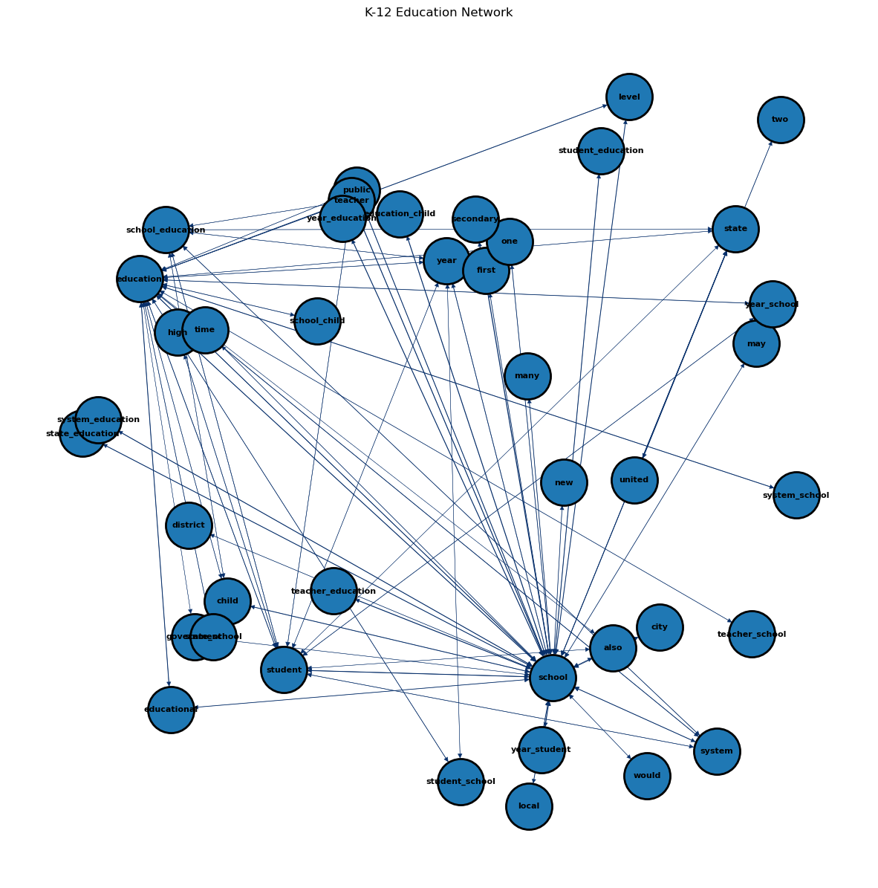

pip install apyoriRequirement already satisfied: apyori in /opt/anaconda3/envs/ANLY501/lib/python3.10/site-packages (1.1.2)
Note: you may need to restart the kernel to use updated packages.Support vector machines (SVMs) perform supervised learning on both qualitative and quantitative data. Support vector machines are versatile in finding the separation of data and can be used to verify other methods. In this case, a dataset of all US school districts was considered and whether each district had migrant students or not.
Support vector machines work by generating the most optimal hyperplane (essentially, a line) through a dataset. The hyperplane is generated by finding the maximum distance between the two classes of data. The hyperplane is then used to classify new data points. In this case, the hyperplane was successful in classifying the data points 88-93% of the time depending on the kernel used.
This method further supports that US school districts with migrant students have key differences from districts without migrant students. The hyperplane was able to classify the data points with a high degree of accuracy. This method can be used to verify other methods and can be used to classify new data points.
pip install apyoriRequirement already satisfied: apyori in /opt/anaconda3/envs/ANLY501/lib/python3.10/site-packages (1.1.2)
Note: you may need to restart the kernel to use updated packages.pip install downloadRequirement already satisfied: download in /opt/anaconda3/envs/ANLY501/lib/python3.10/site-packages (0.3.5)
Requirement already satisfied: tqdm in /opt/anaconda3/envs/ANLY501/lib/python3.10/site-packages (from download) (4.64.1)
Requirement already satisfied: requests in /opt/anaconda3/envs/ANLY501/lib/python3.10/site-packages (from download) (2.27.1)
Requirement already satisfied: six in /opt/anaconda3/envs/ANLY501/lib/python3.10/site-packages (from download) (1.16.0)
Requirement already satisfied: certifi>=2017.4.17 in /opt/anaconda3/envs/ANLY501/lib/python3.10/site-packages (from requests->download) (2022.9.24)
Requirement already satisfied: charset-normalizer~=2.0.0 in /opt/anaconda3/envs/ANLY501/lib/python3.10/site-packages (from requests->download) (2.0.4)
Requirement already satisfied: idna<4,>=2.5 in /opt/anaconda3/envs/ANLY501/lib/python3.10/site-packages (from requests->download) (3.3)
Requirement already satisfied: urllib3<1.27,>=1.21.1 in /opt/anaconda3/envs/ANLY501/lib/python3.10/site-packages (from requests->download) (1.26.8)
Note: you may need to restart the kernel to use updated packages.import nltk
import string
from nltk.stem import WordNetLemmatizer
from nltk.stem import PorterStemmer
from nltk.corpus import stopwords
from nltk.tokenize import word_tokenize
from nltk.sentiment import SentimentIntensityAnalyzer
import os
import matplotlib.pyplot as plt
import numpy as np
import pandas as pd
from apyori import apriori
import networkx as nx
#import download
nltk.download('vader_lexicon')
nltk.download('stopwords')
nltk.download('wordnet')
nltk.download('punkt')
nltk.download('omw-1.4')[nltk_data] Downloading package vader_lexicon to
[nltk_data] /Users/katherinemead/nltk_data...
[nltk_data] Package vader_lexicon is already up-to-date!
[nltk_data] Downloading package stopwords to
[nltk_data] /Users/katherinemead/nltk_data...
[nltk_data] Package stopwords is already up-to-date!
[nltk_data] Downloading package wordnet to
[nltk_data] /Users/katherinemead/nltk_data...
[nltk_data] Package wordnet is already up-to-date!
[nltk_data] Downloading package punkt to
[nltk_data] /Users/katherinemead/nltk_data...
[nltk_data] Package punkt is already up-to-date!
[nltk_data] Downloading package omw-1.4 to
[nltk_data] /Users/katherinemead/nltk_data...
[nltk_data] Package omw-1.4 is already up-to-date!True# import the json file
df = pd.read_json('/Users/katherinemead/Documents/GitHub/anly-501-project-kam515/data/00-raw-data/K-12_education_US.json')
# get only articles column
articles = df['articles']
list_of_lists = []
for a in articles:
temp_string = a['title'] + a['description'] + a['content']
temp_string = temp_string.lower()
list_of_lists.append(temp_string)
# make each list a paragraph in txt file
with open('articles.txt', 'w') as f:
for item in list_of_lists:
f.write(item)# read csv
df = pd.read_csv('/Users/katherinemead/Documents/GitHub/anly-501-project-kam515/501-project-website/codes/04-naive-bayes/wiki-crawl-results.csv')
text_df = df['text']
list_of_lists = []
for i in text_df:
temp_string = i.split()
list_of_lists.append(temp_string)def moving_ave(y,w=100):
mask = np.ones((1,w))/w
mask = mask[0,:]
return np.convolve(y,mask,'same')# RE-FORMATTING THE APRIORI OUTPUT INTO A PANDAS DATA-FRAME WITH COLUMNS "rhs","lhs","supp","conf","supp x conf","lift"
def reformat_results(results):
keep=[]
for i in range(0,len(results)):
for j in range(0,len(list(results[i]))):
if (j>1):
for k in range(0,len(list(results[i][j]))):
if(len(results[i][j][k][0])!=0):
rhs=list(results[i][j][k][0])
lhs=list(results[i][j][k][1])
conf=float(results[i][j][k][2])
lift=float(results[i][j][k][3])
keep.append([rhs,lhs,supp,conf,supp*conf,lift])
if(j==1):
supp=results[i][j]
return pd.DataFrame(keep, columns=['rhs','lhs','supp','conf','supp x conf','lift'])def convert_to_network(df):
print(df)
#BUILD GRAPH
G = nx.DiGraph() # DIRECTED
for row in df.iterrows():
# for column in df.columns:
lhs="_".join(row[1][0])
rhs="_".join(row[1][1])
conf=row[1][3]; #print(conf)
if(lhs not in G.nodes):
G.add_node(lhs)
if(rhs not in G.nodes):
G.add_node(rhs)
edge=(lhs,rhs)
if edge not in G.edges:
G.add_edge(lhs, rhs, weight=conf)
# print(G.nodes)
# print(G.edges)
return Gdef plot_network(G):
#SPECIFIY X-Y POSITIONS FOR PLOTTING
pos=nx.random_layout(G)
#pos=nx.circular_layout(G)
#GENERATE PLOT
fig, ax = plt.subplots()
fig.set_size_inches(15, 15)
#assign colors based on attributes
weights_e = [G[u][v]['weight'] for u,v in G.edges()]
#SAMPLE CMAP FOR COLORS
cmap=plt.cm.get_cmap('Blues')
colors_e = [cmap(G[u][v]['weight']*10) for u,v in G.edges()]
#PLOT
nx.draw(
G,
edgecolors="black",
edge_color=colors_e,
node_size=2000,
linewidths=2,
font_size=8,
font_color="black",
font_weight="bold",
width=weights_e,
with_labels=True,
pos=pos,
ax=ax
)
ax.set(title='K-12 Education Network')
plt.show()
# raise# INSERT CODE TO TRAIN THE ARM MODEL USING THE "apriori" PACKAGEresults = list(apriori(list_of_lists,min_support=0.07,min_confidence=0.07,min_length=1,max_length=5))
print(len(results))124# INSERT CODE TO PLOT THE RESULTS AS A NETWORK-X OBJECT
pd_results=reformat_results(results)
G=convert_to_network(pd_results)
plot_network(G) rhs lhs supp conf supp x conf \
0 [also] [education] 0.082673 0.345972 0.028602
1 [education] [also] 0.082673 0.229560 0.018978
2 [also] [school] 0.129105 0.540284 0.069754
3 [school] [also] 0.129105 0.239496 0.030920
4 [also] [student] 0.082673 0.345972 0.028602
.. ... ... ... ... ...
123 [student] [year, school] 0.072480 0.232727 0.016868
124 [year] [student, school] 0.072480 0.347826 0.025210
125 [student, school] [year] 0.072480 0.306220 0.022195
126 [year, school] [student] 0.072480 0.528926 0.038337
127 [year, student] [school] 0.072480 0.820513 0.059471
lift
0 0.960669
1 0.960669
2 1.002250
3 1.002250
4 1.110883
.. ...
123 1.698332
124 1.469524
125 1.469524
126 1.698332
127 1.522086
[128 rows x 6 columns]